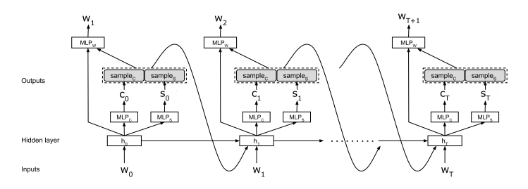
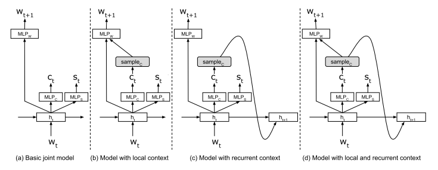
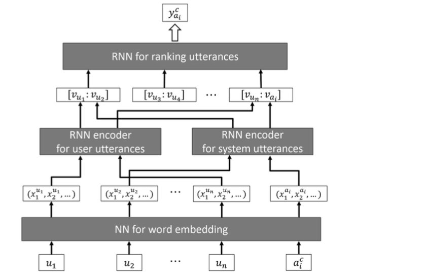
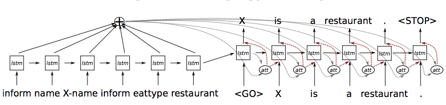
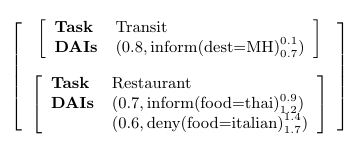
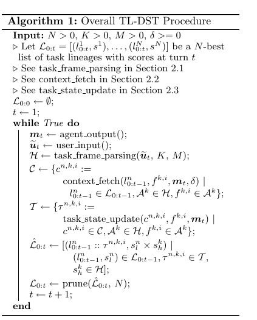

PaperWeekly 第八期
引言
SIGDIAL是ACL所属的关于对话系统的兴趣小组，SIG的文章针对性比较强，但文章的质量良莠不齐，本期给大家精心挑选了4篇SIGDIAL 2016的文章，带着大家一起来看看对话系统最新的研究成果。4篇文章分别是：
1、Joint Online Spoken Language Understanding and Language Modeling with Recurrent Neural Networks, 2016
2、Neural Utterance Ranking Model for Conversational Dialogue Systems, 2016
3、A Context-aware Natural Language Generator for Dialogue Systems, 2016
4、Task Lineages: Dialog State Tracking for Flexible Interaction, 2016
Joint Online Spoken Language Understanding and Language Modeling with Recurrent Neural Networks
作者
Bing Liu, Ian Lane
单位
Carnegie Mellon University, Electrical and Computer Engineering
关键词
Spoken Language Understanding, RNN
文章来源
SIGDIAL 2016
问题
如何将自然语言理解的两大问题和语言模型结合在同一个模型中进行训练，以达到实时理解语言的目的？
模型
特定任务下的Chatbot在理解人类语言时需要重点解决好两个问题：意图识别(Intent Detection)和槽填充(Slot Filling)，本文提出一种融合Intent Detection、Slot Filling和Language Model的模型，相比于之前的模型，本文模型的一大优势在于做自然语言理解的时候不需要等待整个word sequence完整展现，而是可以在线处理每一个arrived word。如下图：

意图识别是个典型的多分类任务，而槽填充是个典型的序列标注任务。RNN的每个step都以当前word作为输入，输出是意图class、该word的label和下一个word，每个step的隐层都包含了之前所有的word、class、label信息。此模型为基本模型，在此基础上做了一些变形，得到下面四个变种：

文章在Airline Travel Information Systems(ATIS)数据集上进行了实验，在语言模型评测指标和意图识别分类准确率上相比之前的模型都得到了一定地提升。
资源
本文Code: http://speech.sv.cmu.edu/software.html
ATIS Dataset: https://github.com/mesnilgr/is13
简评
本文的创新点在于将意图分类、槽填充和语言模型三者合一，相比之前的独立模型来说，每一步产生的信息更多，在预测下一步的时候context内容更加丰富，从而提高了识别的准确率和降低了语言模型的混乱度。
NLP中的很多任务都可以归纳为根据context来预测某一个word、label或者class这种范式，解决的思路也都基本类似，RNN或者GRU、LSTM作为encoder和decoder，配上attention机制来提升结果，context的信息量和质量直接影响着预测的效果，user information、user profile等等都可能作为context来构建模型，得到更好的结果。
Neural Utterance Ranking Model for Conversational Dialogue Systems
作者
Michimasa Inaba, Kenichi Takahashi
单位
Hiroshima City University, 3-4-1 Ozukahigashi, Asaminami-ku
关键词
Ranking Model, Utterance Selection
文章来源
SIGDIAL 2016
问题
在做检索式对话时，对话语句该怎样表示，context信息该怎样引入到模型中？
模型
本文实现的是一个检索式的对话模型，模型分为两部分，分别是：
1、Utterance Encoding
检索式对话，对话语句的encoding是很重要的一部分，文中使用了RNN encoder模型来实现对语句的encoding。在训练过程中，作者把encoder生成的向量，在decode成一个目标语句，即通过一个完整的seq2seq模型来训练encoder。
2、Ranking Candidate Utterances
在对候选语句排序时，作者考虑到了context的问题，他把前几次说的语句分别encode成向量，并依次输入到LSTM。如下图所示：

图中u1到un是整个对话中的前n句话，ai是第i个候选语句。模型中，分别把u1…un以及ai分成用户说的和系统本身输出的，在输入到各自的RNN encoder中，得到向量vu1…vu和vai。最后将向量依次输入到RNN中，得到yai作为候选语句ai在当前context中的得分。
因为本文是一个ranking model，更关注的是候选语句的排序，最后候选集分数列表会转换成TOP 1的概率分布。并使用cross-entropy作为loss function。
简评
本文有两个创新点，首先通过单独训练seq2seq模型，来学习对话语句的encoder，从而降低了整个模型的学习成本，减少了需要标注的数据量。然后在排序模型中将对话的前几句语句有序输入到LSTM，达到融入了context信息的目的。
A Context-aware Natural Language Generator for Dialogue Systems
作者
Ondrej Dusek, Filip Jurcicek
单位
Charles University
关键词
Context-aware, Seq2seq
文章来源
SIGDIAL 2016
问题
如何使得task-oriented的对话生成系统中生成更加自然的回复？
模型
本文是ACL2016 short paper Sequence-to-Sequence Generation for Spoken Dialogue via Deep Syntax Trees and Strings一文的拓展。原文提出基于seq2seq模型的将DA(dialogue acts)生成response的方案，其中输入是三元组(DA type,slot,value)的one-hot representation，输出是对应的response。如下图：

延续原文的工作，作者为了使得生成的回复更加自然，将前面用户的提问也encode进来，具体是在原来模型的基础上加了两个encode的部分。Prepending context是把用户的问题和DA三元组前后拼接成新的表示再feed into encoder（这里要注意问题的dictionary和DA是不一样的）。Context encoder则是把单独把问题encode成和Prepending context相同大小的向量，再将两个encoder得到的向量拼接就得到最后的hidden states。最后decode部分仍然沿用lstm+attention的方法。如下图：

文章在Alex Context NLG Dataset数据集上进行了实验，在BLEU/NIST scores和人工评价两方面成绩都得到了一定地提升。
资源
本文Code: https://github.com/UFAL-DSG/tgen
Alex Context NLG Dataset: https://lindat.mff.cuni.cz/repository/xmlui/handle/11234/1-1675
简评
本文的创新点在于将用户的问题也就是context显式的加入到模型中，相比之前的模型来说，生成的回复会更符合语境。先前的工作旨在将rule-based符号和seq2seq模型结合自动生成回复，本文的改进让一部分context得到保留，使得生成的回复内容更加丰富，从而显得自然不突兀。
Task Lineages: Dialog State Tracking for Flexible Interaction
作者
Sungjin Lee, Amanda Stent
单位
Yahoo Research
文章来源
SIGDIAL 2016
关键词
complex interactions in spoken dialog system, Task Lineage-based Dialog State Tracking
问题
如何将复杂的判别式模型来做DST，并且应用于复杂场景对话系统？
模型
本文在之前Dialog State Tracking方法的基础上提出了Task Lineage-based Dialog State Tracking（TL—DST）。本模型包括三个组成部分：
1、Task Frame Parsing，返回K-best task frame parses， task frame parses结构如下图：

2、Context Fetching，在不同的phenomena中，根据不同的conversation history返回不同的相关信息。
3、Task State Update，可以通过调节context window参数选择使用不同的dialog state tracking方法。
本文模型（TL-DST）处理流程如下图所示：

在t轮，给定句子u，利用task frame parsing生成K-best task frame parses H，给定task frame f，task lineage l， agent output m，利用context features返回相关信息c。
本文在Dialog State Tracking Challenge 的DSTC2和DSTC3数据集上进行了实验，均取得了较baseline好的结果。
资源
Dialog State Tracking Challenge比赛介绍: https://www.microsoft.com/en-us/research/wp-content/uploads/2016/06/williams2016dstc_overview-1.pdf
简评
本文基于DST的方法来处理口语对话系统中的多任务，跨领域，复杂目标的问题，由于缺乏多任务，跨领域，复杂目标的口语对话系统的数据集，本文实验在DSTC2和DSTC3上进行， 并取得了比baseline好的效果。将来的工作是要将TL-DST方法应用于真实环境中的多领域对话评估。
总结
对话系统(Dialogue Systems)是当前工业界最热门的方向之一，去掉语音部分，该问题退化为聊天机器人(chatbot)问题，两者虽然在输入处理中存在一定的差异，但自然语言理解、对话管理和自然语言生成等核心部件都是一样的，面临的很多问题都是共同的，所以相关的研究或多或少都会有参考意义。上下文(context)的理解和处理是一个重要的环节，直接决定了该bot是智能还是智障，挺多的paper都是针对这一问题进行研究的，但在实际应用当中，context的处理仍然不尽如人意，过多依赖人工设置，更像是一种触发开关，存在大量的if…else…。
seq2seq生成式的解决方案初见效果，但离真正应用还有很长的路要走，template-based和rule-based仍是主流解决方案，尤其是在面向具体任务的bot情景中。那么，直接生成回答很难的话，退一步来想这个问题，能否将seq2seq用在template或者rule的自动生成上？能否将paper中多信息融合（比如：user profile、dialogue context）的成果应用在当前bot的某一个阶段？能否训练一个bot simulator来丰富训练数据？每一篇paper都会有一些创新点，可能有的创新点是为了创新而创新，但总归会带来一定的思考和借鉴，尤其是针对某一个细节问题，我想这是paper对于工业界的参考意义，而不是说从paper中完全抠出一个成熟的解决方案来套，甚至把dataset和code都release出来，典型的“拿来主义”。
以上为本期Paperweekly的主要内容，感谢lshowway、zhangjun、zhangboyu和suhui四位同学的整理。
广告时间
PaperWeekly是一个分享知识和交流学问的民间组织，关注的领域是NLP的各个方向。如果你也经常读paper，也喜欢分享知识，也喜欢和大家一起讨论和学习的话，请速速来加入我们吧。
微信公众号：PaperWeekly
微博账号：PaperWeekly（http://weibo.com/u/2678093863 ）
知乎专栏：PaperWeekly（https://zhuanlan.zhihu.com/paperweekly ）
微信交流群：微信+ zhangjun168305（请备注：加群 or 加入paperweekly）